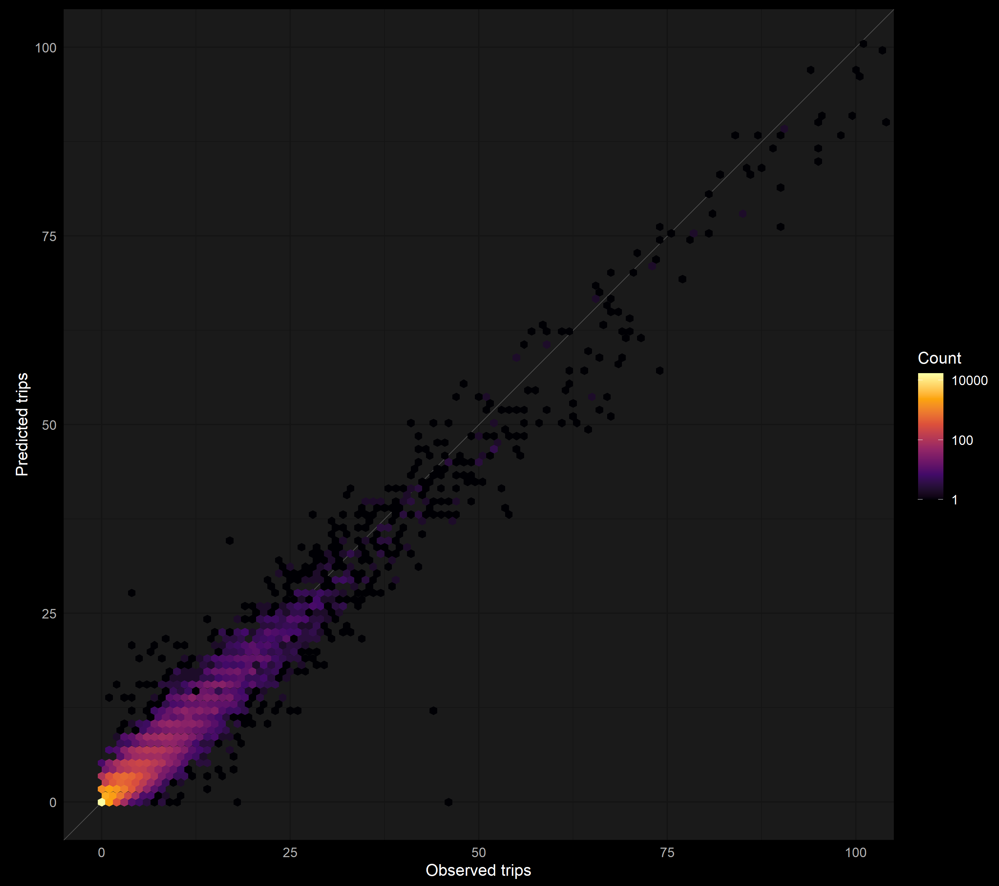
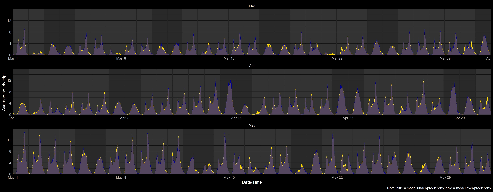

CSG Justice Center Project Presentation
Chris Gettings
9/30/2020
Overview
- Project
  - Description
  - Rationale
- Data pipeline (all in
R)
  - Getting data
  - Building analysis dataset
  - Final data example
- Analysis
  - Description
  - Model specification
- Findings
  - Checking model fit
  - Predictions
- Future directions
Project
Mapping and analyzing Citi Bike trips in NYC
(on Github @ cgettings/Citi-Bike-Trips)
Can I predict station traffic, given a timestamp, a docking station, and a weather forecast?
Why do it?
- Interesting, complex
- Useful for planning bike redistribution
- An excuse to learn cool stuff
Why present it?
- Interesting, complex
- Responsible for many of my data science skills
Data pipeline: Getting data
Target: Local SQLite tables with data on Citi Bike trips, station status, and weather conditions
- Check for new data
 2. ↪ Get new data
 3. ↪ Process + upload to database
Trip data:
  S3 bucket ↔︎ Local CSV files
  ↪ ⤓ new CSV files → 💾
   ↪ SQLite
Station status data:
  Public Google Drive folder (old way)
  ↪ ⤓ + 💾 all CSV files
   ↪ SQLite
  AWS server ↔︎ Local JSON files(new way)
  ↪ ⤓ new JSON files → 💾
   ↪ SQLite
Weather data:
  NOAA API ↔︎ SQLite
  ↪ ⤓ new records (as CSV)
   ↪ SQLite
Data pipeline: Building analysis dataset
Target: One combined dataset for 2018
- Extract subset
  - Filter:
year == 2018 for trips, status, and weather tables
 2. ↪ Summarize
  - Summarize key variables for each
date x hour ( x start_station) combination
 3. ↪ Combine
   - Join on
date & hour
  4. ↪ Process
   - Create derived variables & rescale predictors
Data pipeline: Building analysis dataset
Creating derived variables
mutate(
workday = if_else(wday_wend == "weekday" & isholiday == FALSE, TRUE, FALSE),
total_trend_yearly = (yday(date)-1)/(365.25),
sin_year = sin(2 * pi * total_trend_yearly),
cos_year = cos(2 * pi * total_trend_yearly)
)Is a station in service?
data %>%
group_by(start_station_name, date) %>%
mutate(
no_trips_hours = sum(trips == 0, na.rm = TRUE),
n_hours = length(trips)
) %>%
mutate(
in_service_trips = if_else(no_trips_hours == n_hours, 0L, 1L),
in_service =
case_when(
(!is.finite(station_status) & in_service_trips == 0L) | station_status == "out_of_service" ~ 0L,
(!is.finite(station_status) & in_service_trips == 1L) | station_status == "active" ~ 1L
)
)Data pipeline: Building analysis dataset
Rescaling predictors
Data pipeline: Final data example
Analysis: Description
- Modelling # of trips / hour that start at a given station
  - Generalized linear mixed model, generalized Poisson distribution
  - {glmmTMB} package in R
  - Small subset: 20 stations, March - May of 2018
Analysis: Model specification for {glmmTMB}
glmmTMB_size_testing samples the data, fits the model with {glmmTMB}, gives details on progress, appends model summary output to CSV file, and returns a list with the fitted model object and some metadata
glmmTMB_size_testing(
trips ~
hour * workday +
precip_yn +
temperature_45_c15 +
I(temperature_45_c15 ^ 2) +
daily_uv_index_10_c5 +
I(daily_uv_index_10_c5 ^ 2) +
humidity_100_c60 +
I(humidity_100_c60 ^ 2) +
dew_point_45_c7 +
I(dew_point_45_c7 ^ 2) +
total_trend_yearly +
sin_year_r_2 +
cos_year_r_2 +
capacity_med_30_c30 +
in_service_fct +
us(1 | start_station_name) +
ar1(0 + ts_yday | start_station_name) +
ar1(0 + hour | start_station_name) +
ar1(0 + hour:workday | start_station_name) +
ar1(0 + hour:ts_yday | start_station_name) +
ar1(0 + hour:wday:workday | start_station_name) +
ar1(0 + hour:precip_yn:workday | start_station_name) +
ar1(0 + hour:precip_yn:temperature_45_c15 | start_station_name) +
ar1(0 + hour:precip_yn:humidity_100_c60 | start_station_name) +
ar1(0 + hour:workday:temperature_45_c15 | start_station_name) +
ar1(0 + hour:workday:humidity_100_c60 | start_station_name),
family = "genpois",
data = trips_station_weather_data,
months = 3:5,
n_stations = 50,
seed = 726,
output_dir = output_dir,
verbose = FALSE,
profile = TRUE,
optCtrl = optCtrl,
csv_name = csv_name
)Findings: Checking model fit
Model fit: Scatter-heatmap of observed vs. predicted trips

Model fit: Observed vs. predicted trips, by time

Findings: Predictions
Predictions: Predicted trips by station under hypothetical weather conditions

Future directions
- Reproducible pipeline with
{drake} - Cross validation with different subsets
- More sophisticated diagnostics with
{DHARMa} - Interactive
{leaflet}map